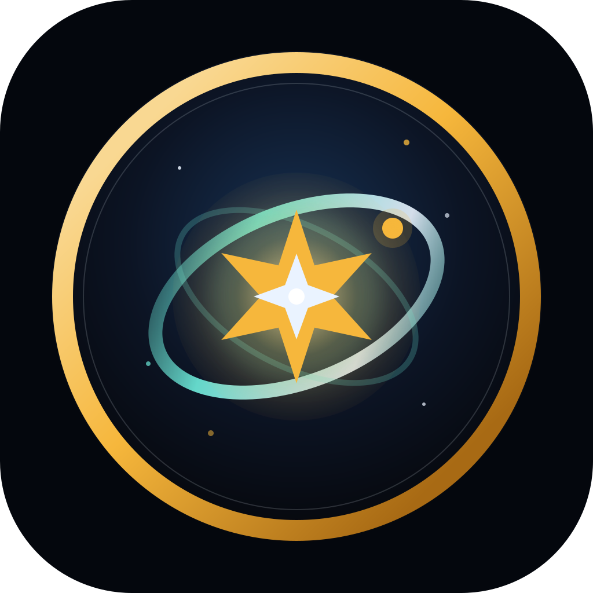
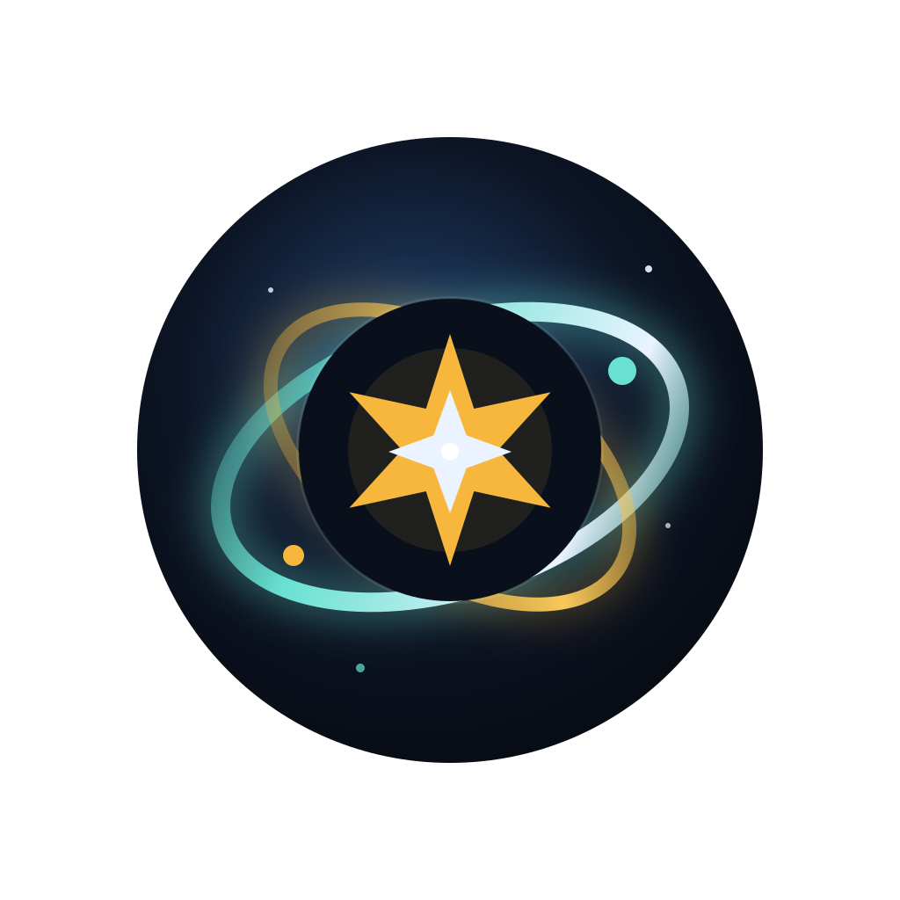
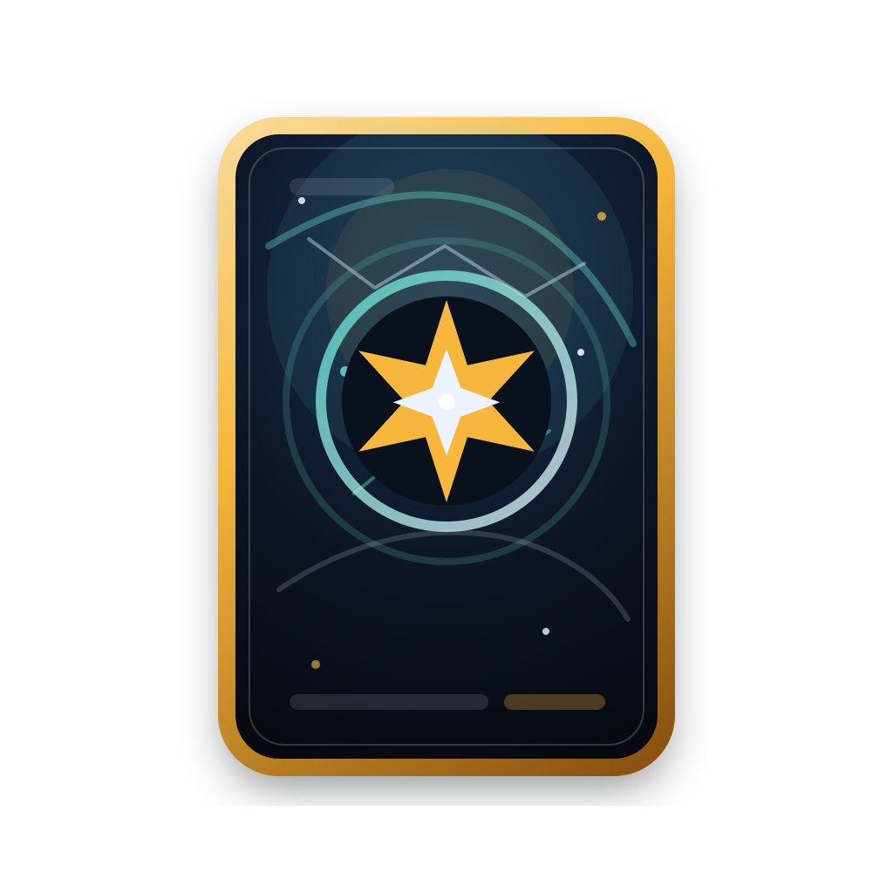
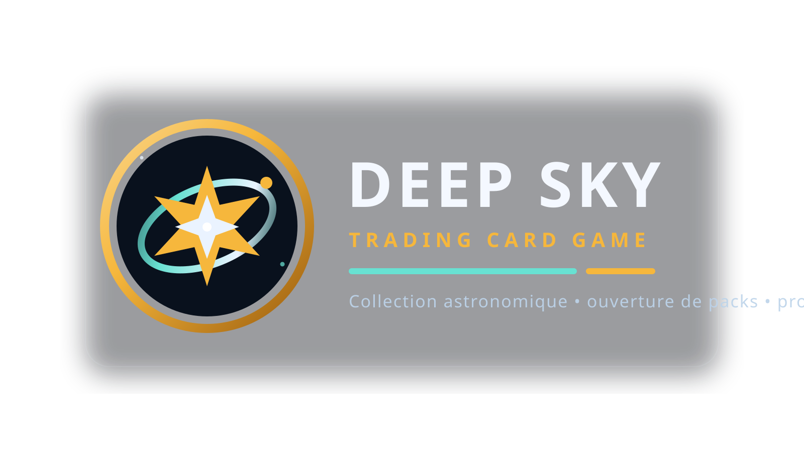

Rond • Bordure • Sans nom
Badge Celeste
La version la plus robuste pour une icone Android. Le contour dore donne une bonne tenue en petit et le coeur reste lisible a faible taille.
Quatre pistes construites a partir de la palette et du motif deja presents dans l'application : ciel profond, lueur aurora, accent or, etoile centrale et lecture plus ou moins “TCG”.

La version la plus robuste pour une icone Android. Le contour dore donne une bonne tenue en petit et le coeur reste lisible a faible taille.

Plus atmospherique et premium. La silhouette repose davantage sur la lumiere et les anneaux, donc elle fonctionne mieux en contexte sombre.

La piste la plus typiquement Trading Card Game. Elle ouvre une direction tres riche pour des badges, boosters, cadres rares ou ecrans de collection.

Le meilleur choix quand le nom doit etre lu en un coup d'oeil : ecran de lancement, Play Store, README, banniere ou communication.
Badge Celeste comme icone principale, puis garder Wordmark Launch comme variante institutionnelle.